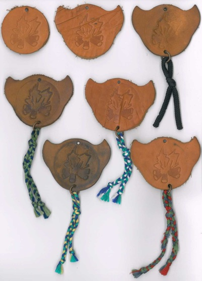

O Lesní moudrosti
Hnutí Lesní moudrosti
Lesní moudrost vychází z knih a činnosti Ernesta Thompsona Setona (1860-1946), který byl zakladatelem hnutí Woodcraft a dlouholetým činovníkem amerického skautského hnutí. A co se pod lesní moudrostí skrývá? Je to znalost přírody (zvířat a jejich stop, rostlin, hvězd atd.), tábornické dovednosti (uzlování, morseovka, šifrování, práce se dřevem, zdravověda, práce s ohněm atd.), fyzická zdatnost, sebeovládání a chování v přírodě. Proto jako uznání těm, kteří tyto dovednosti ovládnou, udělujeme u posledního táborového ohně přiměřený stupeň Lesní moudrosti v podobě „placky“.
Jak to chodí u nás?
Každé dítě, které s námi jede poprvé, dostává automaticky u prvního táborového ohně tzv. 0. stupeň („kulatá placka“). Pro schopné táborníky máme na konci tábora 1. -6. stupeň („rohatá placka“ různě upravená přivěšenými šňůrkami). Vedoucí pak mají svou vlastní „rohatou placku“ s kuličkami.
Foto placek
1. řada: 0. stupeň, 1. stupeň, 2. stupěn;
2. řada: 3. stupeň, 4. stupeň;
3. řada: 5. stupeň, 6. stupeň